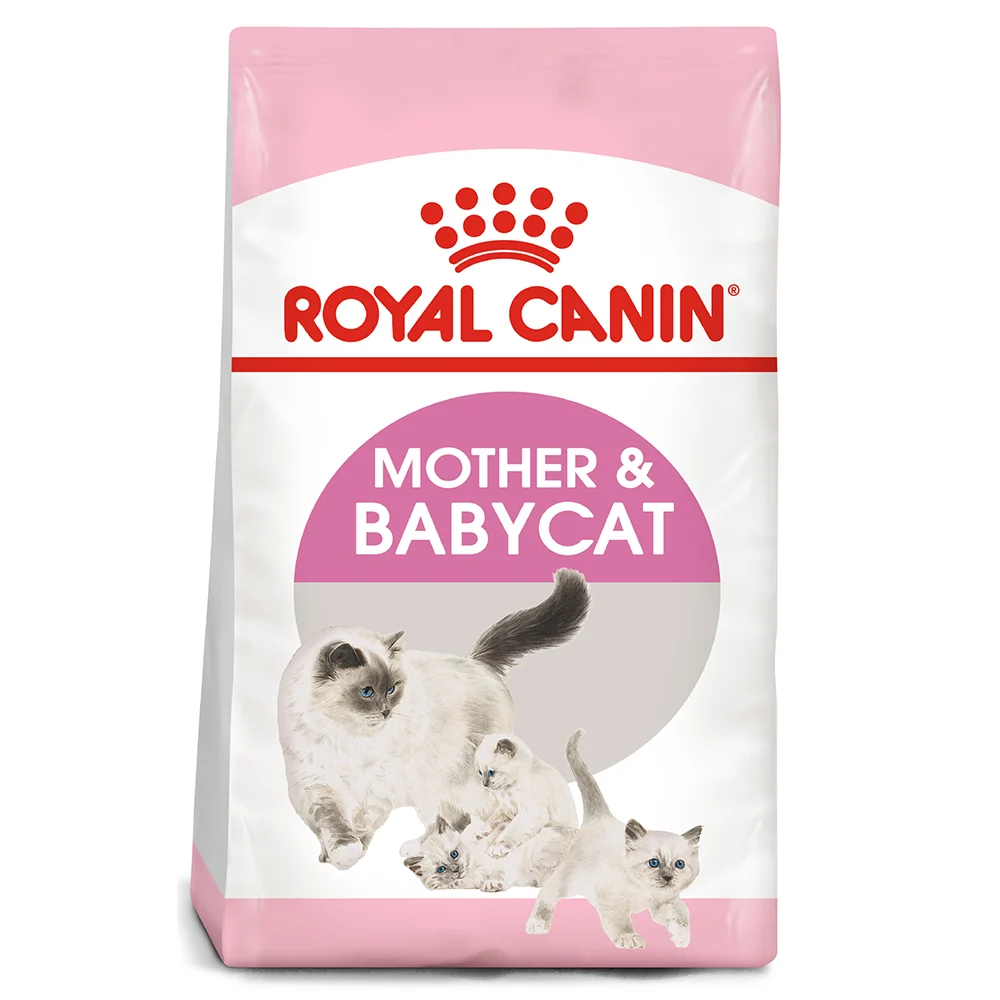

THỨC ĂN CHO MÈO MẸ VÀ MÈO CON
Thương hiệu: ROYAL CANIN | Tình trạng: Còn hàng
130.000đ
Thông tin cơ bản:
Thức ăn cho mèo con và mèo mẹ ROYAL CANIN Mother & Babycat dành cho mèo con đang cai sữa (1 - 4 tháng), mèo mẹ đang mang thai và cho con bú. Từ lúc sinh ra đến khi mèo được 4 tháng, nhu cầu năng lượng của chúng rất cao. Tuy nhiên khi mèo được 1-2 tháng, khi bắt đầu cai sữa, hệ miễn dịch của chúng sẽ rất yếu. Trong giai đoạn này mèo cần được chăm sóc đặc biệt do hệ tiêu hóa và miễn dịch chưa phát triển toàn diện.
Số lượng sản phẩm:
MÔ TẢ CHI TIẾT
Thức ăn hạt cho mèo con và mèo mẹ ROYAL CANIN Kitten tạo thói quen ăn uống dựa theo tuổi của mèo, cần cho ăn một ngày 3 lần vào các giờ cố định. Cho ăn tại một chỗ để tạo thói quen tốt cho mèo. Lưu ý không cho ăn quá nhiều. Nên cho mèo ăn thức ăn chế biến riêng, không cho ăn thức ăn thừa của người. Vì thức ăn của người có nhiều thành phần khiến mèo bị rối loạn tiêu hóa, ảnh hưởng đến sức khỏe của mèo.
Hướng dẫn sử dụng:
- Dựa theo tuổi của mèo, cần cho ăn một ngày 3 lần vào các giờ cố định.
- Cho ăn tại một chỗ để tạo thói quen tốt cho mèo.
- Lưu ý không cho ăn quá nhiều.
- Nên cho mèo ăn thức ăn chế biến riêng, không cho ăn thức ăn thừa của người.
- Đột ngột thay đổi loại thức ăn mới có thể gây mất cân bằng hệ tiêu hóa. Mèo dễ bị khó tiêu và đi ngoài.Vì thức ăn của người có nhiều thành phần khiến mèo bị rối loạn tiêu hóa, ảnh hưởng đến sức khỏe của mèo.
- Bảo đảm cung cấp đủ nước uống cho mèo. Nếu thấy nước bị mèo làm bẩn, cần thay nước mới ngay lập tức.
Hạn sử dụng:
18 tháng kể từ ngày sản xuất.ĐÁNH GIÁ SẢN PHẨM